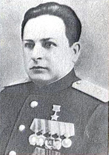

ул. Королёва (ранее называлась — улица Днепровская)
Названа в 1972 в честь Н. Ф. Королёва. Протяженность 780 м, от Народного ополчения улицы до Днепровского бульвара. Современный облик улицы складывается с 1960-х годов.
Николай Филиппович Королёв(01.07.1906 — 09.04.1972) — один из организаторов и руководителей коммунистического подполья и партизанского движения в Могилёвской обл. в годы Великой Отечественной войны, Герой Советского Союза (1.1.1944), генерал-майор (1943), почётный гражданин г. Могилёва (1970).
Николай Филиппович Королев родился в деревне Аминовичи, что под Осиповичами, особенно прославился в годы Великой Отечественной войны.
Уже в июле 1941 года он, в предвоенное время рабочий, председатель колхоза, сельсовета, председатель Осиповичского райисполкома, стал одним из первых на Беларуси партизаном, а к концу войны — партизанским генералом.
Между летом 1941-го и летом 1944-го пролегла огромная дистанция. Бои, походы, диверсии, помощь мирному населению. Все это — на родной земле. Деловые качества Н. Ф. Королева, которые он проявлял на мирной работе, в годы оккупации дополнили ненависть к лютому врагу, незаурядное мужество, решительность, умение просчитывать самые незначительные и самые масштабные ситуации и в большинстве случаев добиваться успеха, победы в самых, иной раз, затруднительных положениях.
Он воевал командиром группы, потом — в партизанском отряде им. Сталина, с марта 1942 по январь 1943-го — командиром. В конце 1942-го Королев был вызван в Москву, где «всесоюзный староста» М. И. Калинин вручил ему в Кремле орден Ленина. Николай Филиппович вскоре был назначен командиром 1-й Осиповичской партизанской бригады, преобразованной летом в Осиповичскую военно-оперативную группу. И бригада, и группа основные удары наносили по железным дорогам. Операции «Концерт» и «Рельсовая война», в которых они участвовали в 1943-м и 1944 годах, широко известны и в истории всей 2-й мировой войны.
Не зря боевому командиру соединения Н. Ф. Королеву 1 января 1944 года было присвоено высокое звание Героя Советского Союза. А еще раньше, 16 сентября 1943 года — звание генерал-майора.
Николай Филиппович Королёв

На главную